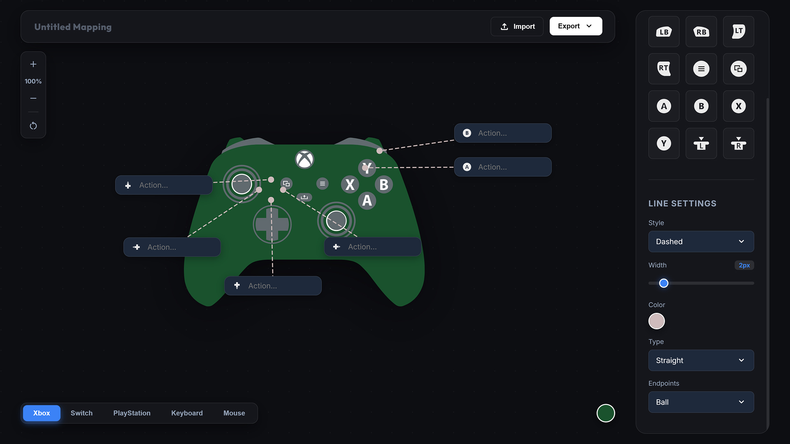
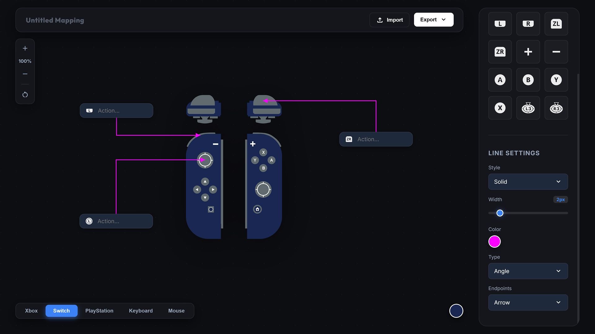
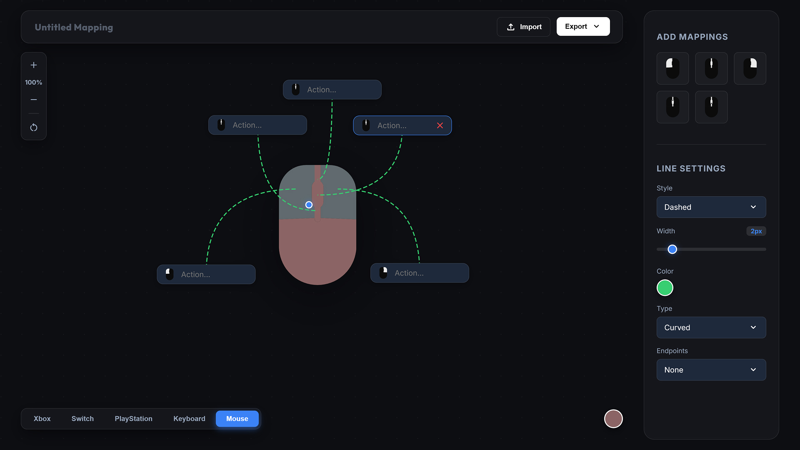

Vision du Projet
InputMapper est né d'une frustration récurrente lors de la rédaction de Game Design Documents (GDD). La création de schémas pour expliquer les contrôles d'un jeu est une tâche chronophage et redondante, nécessitant des outils de dessin complexes pour un résultat parfois peu professionnel.
Cet outil permet de générer rapidement des schémas clairs pour n'importe quel type de contrôleur populaire. Plus besoin de chercher des templates JPG de mauvaise qualité ou de placer manuellement des flèches dans Photoshop.
Points Clés :
- Multi-plateforme : Support complet pour Xbox, PlayStation, Switch, ainsi que Clavier et Souris.
- Édition Facile : Ajoutez des étiquettes dynamiques sur chaque bouton en un clic.
- Exports Flexibles : Exportez vos schémas en PNG pour vos documents, en SVG pour une qualité infinie, ou en JSON pour reprendre votre travail plus tard.
- Design Moderne : Une interface simple, intuitive et fluide.
Ressources du Projet
Utilisez l'outil directement dans votre navigateur.
rocket_launch
Lancer
l'Application
code
Code Source
(GitHub)
Galerie du Projet
Aperçu de l'outil de création de mapping.


